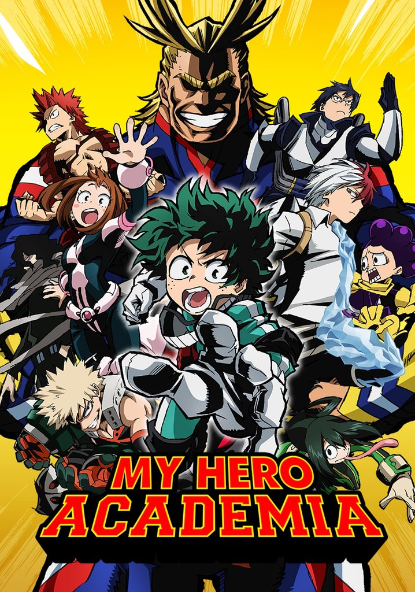
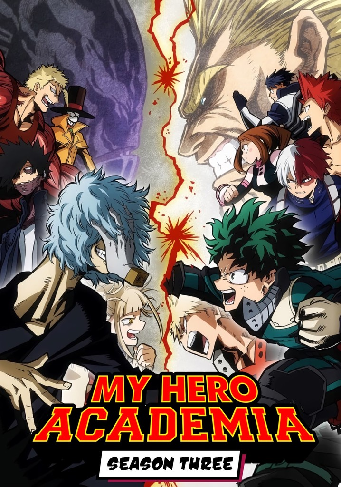
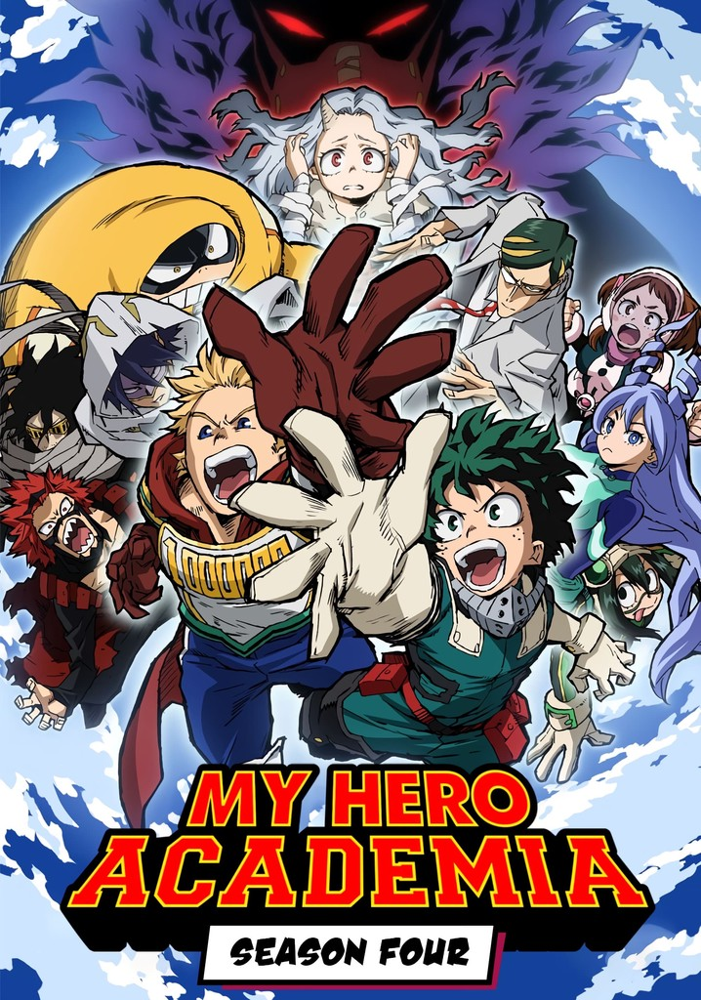
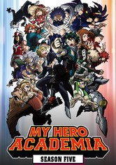
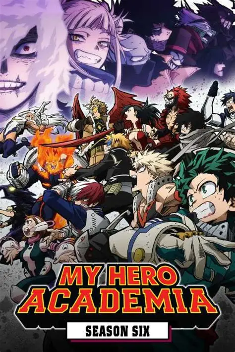
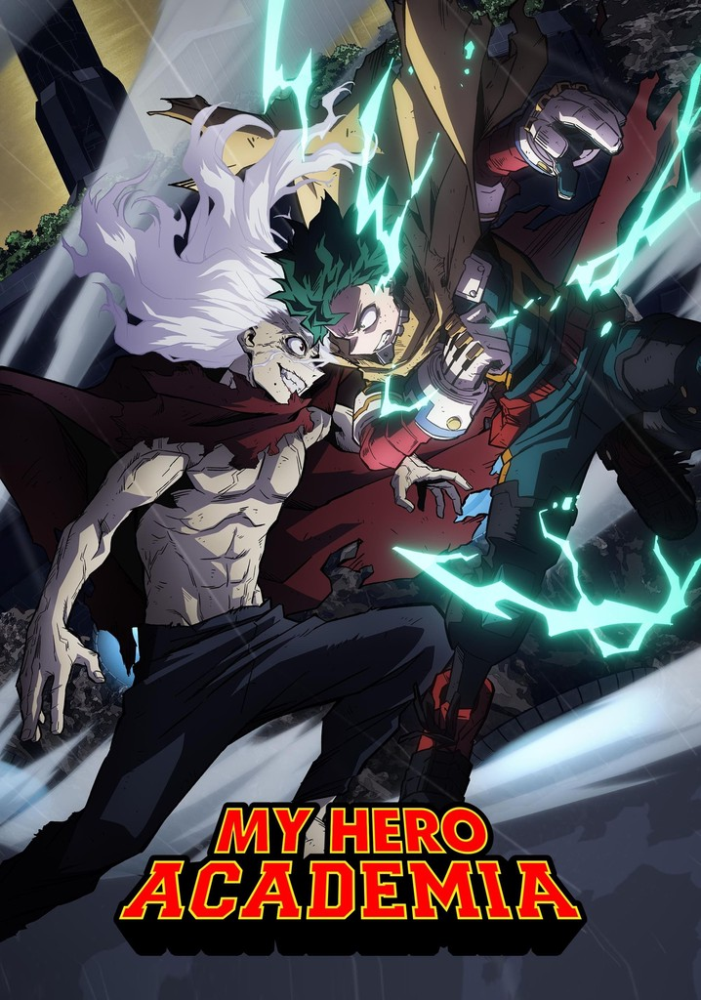
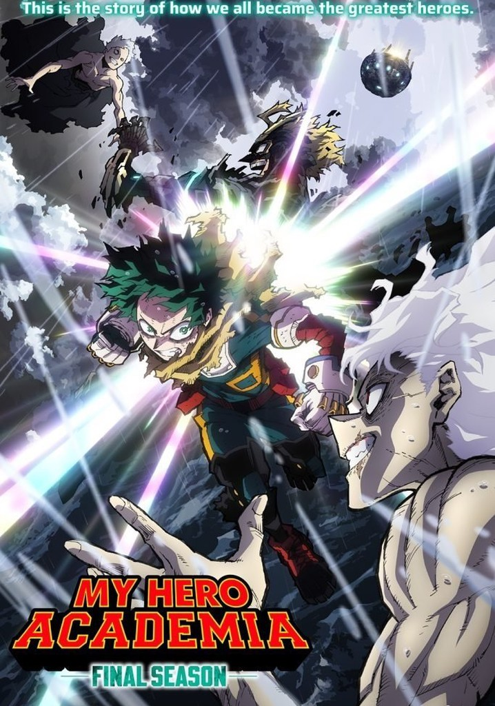

Temporada 1
A primeira temporada de My Hero Academia apresenta o mundo onde quase toda a população possui superpoderes chamados “Individualidades”. O protagonista, Izuku Midoriya, nasce sem poderes, mas sonha em se tornar um herói como seu ídolo All Might. Após demonstrar coragem, Midoriya recebe o poder One For All e entra para a U.A., uma famosa escola de heróis. A temporada acompanha seu início difícil como estudante e a primeira grande ameaça da Liga dos Vilões.

Temporada 2
A segunda temporada aprofunda o desenvolvimento dos alunos da Classe 1-A. O grande destaque é o Festival Esportivo da U.A., onde os estudantes competem entre si para mostrar suas habilidades. Personagens como Shoto Todoroki ganham mais profundidade emocional e familiar. Depois do torneio, os alunos enfrentam estágios com heróis profissionais e entram em conflito com o assassino de heróis Stain, cuja ideologia começa a influenciar vários vilões.

Temporada 3
A terceira temporada traz uma escalada enorme nos conflitos. Durante o treinamento em acampamento, a Liga dos Vilões realiza um ataque brutal e sequestra Katsuki Bakugo. Isso leva a um grande resgate envolvendo heróis profissionais e culmina na luta histórica entre All Might e All For One. O resultado muda completamente a sociedade dos heróis e marca uma nova era para Midoriya.

Temporada 4
Na quarta temporada, Midoriya começa a trabalhar ao lado do herói Sir Nighteye. A principal trama envolve a jovem Eri e o vilão Kai Chisaki, também conhecido como Overhaul, que planeja destruir as Individualidades. A temporada mistura momentos pesados, batalhas intensas e crescimento emocional dos personagens. Mais tarde, ela também mostra o Festival Cultural da escola e o surgimento do herói número 1, Endeavor.

Temporada 5
A quinta temporada alterna entre treinamentos e conflitos maiores. Os alunos da Classe 1-A enfrentam a Classe 1-B em batalhas estratégicas, enquanto Midoriya começa a descobrir novos aspectos do One For All. Paralelamente, a Liga dos Vilões ganha muito mais destaque, especialmente Tomura Shigaraki, cuja origem e evolução são exploradas profundamente. A temporada prepara o terreno para uma guerra de grande escala.

Temporada 6
A sexta temporada adapta a guerra entre heróis e vilões. Os heróis lançam um ataque total contra a Frente de Libertação Paranormal, mas o conflito rapidamente sai do controle. Shigaraki desperta com um poder devastador, causando destruição massiva. Diversos heróis sofrem perdas graves, e Midoriya começa a carregar sozinho o peso de proteger a sociedade. O tom fica muito mais sombrio e intenso do que nas temporadas anteriores.

Temporada 7
Na sétima temporada, a batalha final contra All For One e Shigaraki entra em sua fase decisiva. Os heróis dividem forças para tentar impedir os vilões em diferentes frentes de combate. Midoriya precisa dominar completamente o One For All enquanto enfrenta desafios físicos e emocionais extremos. A temporada destaca alianças, sacrifícios e confrontos finais importantes para o destino da sociedade dos heróis.

Temporada 8
A oitava temporada de My Hero Academia é a conclusão definitiva da história principal. Ela continua exatamente após os eventos da guerra final e mostra os confrontos decisivos entre os heróis e os vilões, especialmente Izuku Midoriya contra Tomura Shigaraki, além da batalha entre All Might e All For One.
